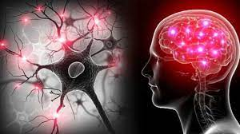
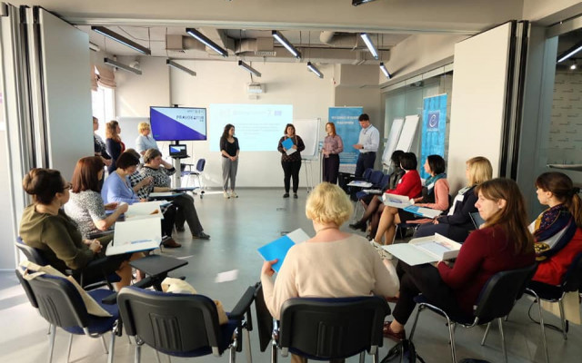

Мозок людини
-
Нейропластичність
- Мозок людини має нейропластичність, тобто здатність змінюватися і адаптуватися протягом життя
- Ця властивість дозволяє мозку відновлювати пошкоджені ділянки і навіть компенсувати втрату функцій.
- Нейропластичність є основою для відновлення після травм мозку і для вивчення нових навичок.
-
Сприйняття і обробка інформації
- Мозок здатний обробляти нейрони мільйони бітів інформації за секунду.
- Він інтерпретує вхідні сигнали зі всіх органів і визначає, яка інформація є важливою для реакції та сприйняття оточуючого світу.
-
Творчість і інновації
- Мозок здатний генерувати нові ідеї і творчі рішення завдяки здатності асоціювати різні концепції і вирішувати завдання за допомогою абстрактного мислення.
- Це зробило людину найбільшим творцем інструментів, технологій та культури на планеті.
-
Емоційний інтелект
- Мозок також володіє здатністю розпізнавати емоції у себе та інших.
- Емоційний інтелект важливий для міжособистих відносин, розв'язання конфліктів та сприйняття соціальних сигналів.
-
Мислення і мова
- Мозок людини забезпечує можливість мислити абстрактно та використовувати мову для спілкування та передачі знань.
- Мова є важливим інструментом для передачі історії, культури і інформації між поколіннями.
-
Самосвідомість
- Мозок може генерувати свідомість і уявлення про себе.
- Це робить людину єдиною істотою на Землі, яка може рефлексивно думати про власне існування і світ навколо себе.
-
Швидкість і точність
- Мозок здатний вирішувати складні обчислення і приймати рішення на швидкості світла.
- Ця швидкість і точність роблять його неймовірною машиною для обробки інформації.
-
Медитація і зосередженість
Здатність мозку до медитації та зосередженості дозволяє досягати внутрішнього спокою і підвищувати ефективність різних видів діяльності.
Ці можливості мозку людини завжди залишаються предметом досліджень і дебатів у науці, і завдяки їм ми продовжуємо докладати зусиль для розуміння та максимізації потенціалу нашого найважливішого органу.
Процес навчання у людини
Процес навчання у людини - це складний та захоплюючий процес, який включає в себе ряд психологічних, нейробіологічних та соціальних аспектів.
-
Сенсорне сприйняття
Все починається зі сприйняття інформації через органи чуття, такі як зір, слух, дотик, смак і запах. Людина отримує велику кількість даних з навколишнього світу.
-
Обробка інформації
Отримана інформація потрапляє в мозок, де відбувається її обробка. Мозок виявляє закономірності, розпізнає шаблони, створює асоціації та визначає важливість даних.
-
Формування спільностей
Важливим аспектом навчання є спілкування та взаємодія з іншими людьми. Спілкування дозволяє обмінюватися досвідом, знаннями і культурою.
-
Мотивація
Мотивація грає важливу роль у навчанні. Людина навчається краще, коли є зацікавленість або потреба в здобутті конкретних знань або навичок.
-
Оперування інформацією
Мозок використовує різні стратегії для запам'ятовування інформації, такі як асоціативність, повторення, аналіз і синтез. Репетиція та активне використання знань допомагають зберегти інформацію в довготривалій пам'яті.
-
Випробування і помилки
Навчання включає в себе випробування різних підходів та вирішення проблем через помилки. Перепитування і вирішення завдань, навіть якщо вони не завжди вдаються, сприяють формуванню кращого розуміння і навичок.
-
Адаптація і зміна
Мозок постійно адаптується до нового оточення і нових умов. Ця здатність до адаптації є ключовою для успішного навчання протягом життя.
-
Саморегулювання
Людина вчиться контролювати свої дії, здібності та реакції. Це включає в себе розвиток навичок самодисципліни, самооцінки та самоконтролю.
-
Соціальне навчання
Люди навчаються від інших через спостереження, наслідування та імітацію. Співпраця та обмін досвідом у групах і спільнотах грають важливу роль у навчанні.
-
Здобуття досвіду і експертність
Поступово, з часом, навчання може перетворити людину в експерта у певній області, де вона має глибокі знання і навички.
Навчання - це невербальний процес, який змінює мозкову структуру та функції. Цей процес починається з моменту народження і триває протягом всього життя, допомагаючи людям адаптуватися до світу, розвиватися та досягати нових вершин.
На початок↑Мотивації вам трохи
-
Будьте творцем
Програмування дозволяє вам створювати нові речі, будь то веб-сайти, мобільні додатки, ігри або інші програми. Ви можете бути творцем світу, який здивує і корисний для інших.
-
Розвиток креативності
Програмування вимагає творчого мислення та розв'язання складних завдань. Це дає вам можливість розвивати та вдосконалювати свою креативність.
-
Пошук рішень для проблем
Програмування - це спосіб розв'язувати реальні проблеми. Ви можете створити програми, які полегшують життя людям, вирішують екологічні питання, допомагають в медицині тощо.
-
Підвищення заробітної плати
Програмісти, як правило, отримують високу заробітну плату, особливо у великих технологічних компаніях. Це може бути додатковою мотивацією для навчання.
-
Гнучкість у роботі:
Багато програмістів мають можливість працювати здалі або відкрити свою власну компанію. Це дає вам гнучкість у виборі робочого місця та графіку.
-
Спільнота і співробітництво
Програмування часто відбувається у співробітництві з іншими людьми. Ви можете приєднатися до програмістських спільнот і навчитися від інших.
-
Постійний розвиток
Технології постійно змінюються, тому навчання програмуванню - це постійний процес розвитку та вдосконалення своїх навичок.